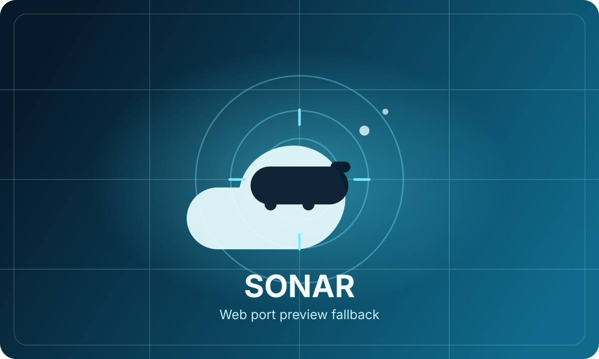
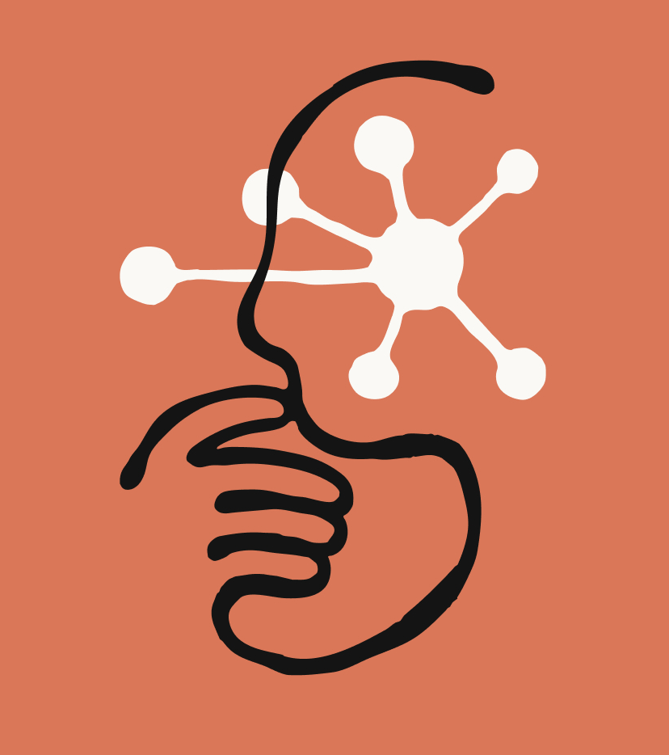

Impostor
LiveA party word-guessing game where one player secretly does not know the word. Give clues, spot the impostor, and vote before it is too late. Supports online multiplayer with room codes or single-device pass-and-play.
Open App ->A collection of personal web applications crafted through Vibe Coding - exploring ideas at the intersection of games, AI, and education.
Explore ProjectsClick any card to open the live application.
A party word-guessing game where one player secretly does not know the word. Give clues, spot the impostor, and vote before it is too late. Supports online multiplayer with room codes or single-device pass-and-play.
Open App ->A personal board game library manager. Browse your collection, filter by player count and play time, read AI-generated rules summaries, and get game recommendations from an AI Copilot. This is evolving into my own library of board games.
Open App ->An interactive 3D educational game teaching emotional regulation to students. Explore three emotion-themed islands, help feeling-spirits with calm strategies, and collect guardian tools through breathing and puzzle mini-games.
Open App ->A multiplayer trivia game where a host presents logic-based questions to remote players joining via QR code. Features real-time score tracking, bonus mini-games (emoji math, mirror words, spot-the-difference), and a confetti podium finale.
Open App ->
An underwater game of cat-and-mouse where two teams race to deal two points of damage and win instantly. This version brings the Sonar board game experience to the web.
Open App ->Behind this portfolio is a mix of product instinct, manufacturing discipline, and AI-assisted software building focused on turning playful ideas into polished web experiences people actually want to use.
Founder / Product Lead
Part builder, part systems thinker, and the one shaping the direction behind every project. Michael brings real-world problem solving, product taste, and just enough stubborn curiosity to keep shipping ideas until they feel right.

Architecture / Deep Build Partner
The calm systems brain in the room. Claude helps untangle messy requirements, structure ambitious features, and turn rough concepts into foundations that are stable enough to build on.
Frontend / Product Execution Partner
Fast with iterations, strong on polish, and always ready for one more pass. ChatGPT helps move from spark to shipped experience across UI, workflow design, content, and launch-ready details.
A space for the longer explanation: why this site was built, what you were exploring, and what vibe coding means in your own words.
From "Sure, it's great" to "This is a game changer."
For the last two years, I've been evaluating AI models through the lens of industrial manufacturing and product leadership. While the progress was impressive, I hadn't yet felt that true "wow" factor. That changed recently. With the arrival of next-gen models like Claude, GPT-5.4, and Codex, I realized we had moved past simple automation into something entirely new.
I decided to stop just evaluating and start building. I decided to embrace Vibe Coding.
The Product Manager's Superpower
My background isn't in deep-stack development; I am an engineer and product manager by training. My expertise lies in understanding customer feedback, defining requirements, and driving business outcomes.
What I discovered is that Vibe Coding is Product Management 101. It feels like having an elite dev team at your disposal 24/7. When you describe a requirement with clarity and set clear expectations, the AI closes the loop in minutes. You move from an idea to a high-fidelity proof of concept so fast it feels like magic. It forces you to ask deeper questions and refine requirements in real-time. For a PM, this isn't just a toy, it's the ultimate prototyping tool.
Building Dreams (and Fixing "The Gap")
The projects you see here at Taesch Labs started as personal requests from my kids and my wife, a dedicated school social worker. These were the "I wish we had an app for..." ideas that usually stay as dreams because the technical barrier was too high.
Yes, you can ship a web app in 30 minutes. But the real joy, the "Vibe," is the hours spent fine-tuning, reacting to feedback, and sculpting the experience without getting lost in the syntax. It is deeply satisfying work.
A Reality Check
I am fortunate to work at a software company surrounded by world-class engineers. Let's be real: to take a project from a "Vibe" to a professional-grade, scalable product, you still need their talent. I spent many late nights with my friend Rohit, learning the ropes of GitHub and deployment.
The gap between "Idea" and "Reality" has never been smaller. Taesch Labs is my journey across that gap. I'd love to hear about yours.